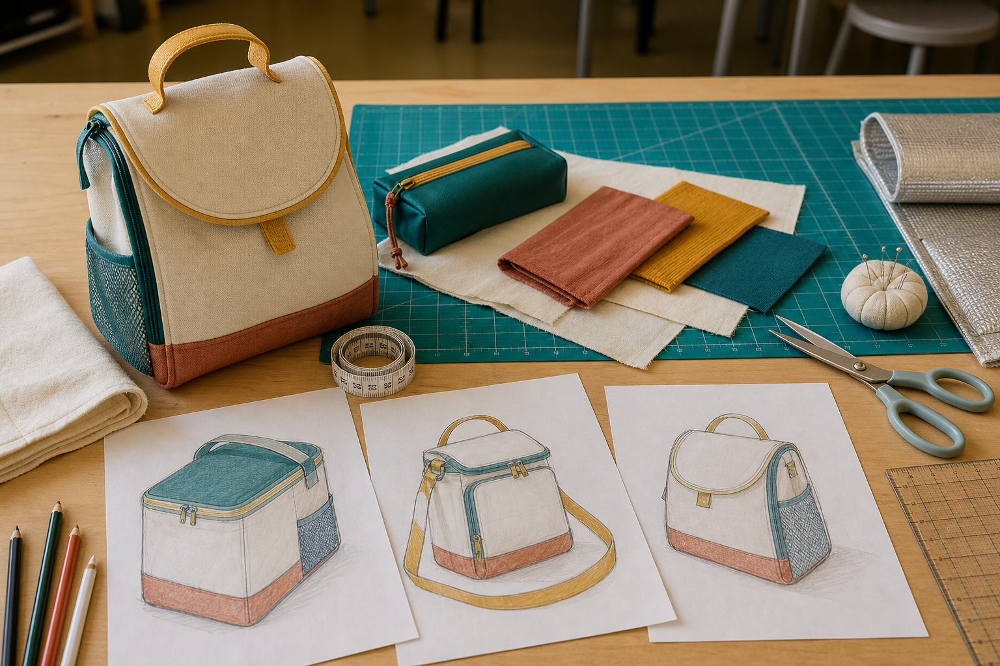
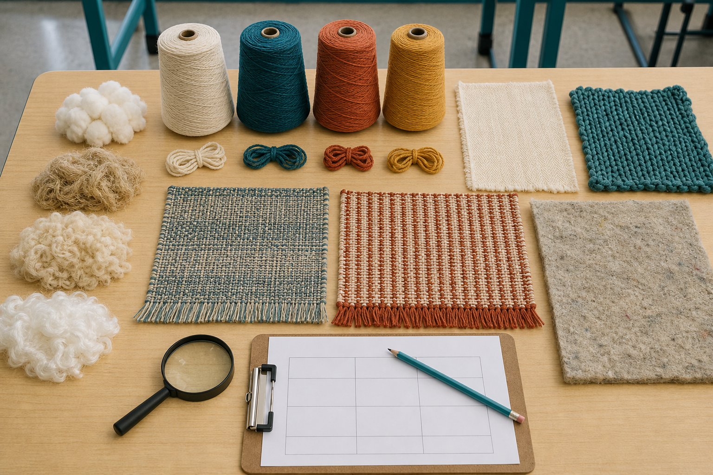
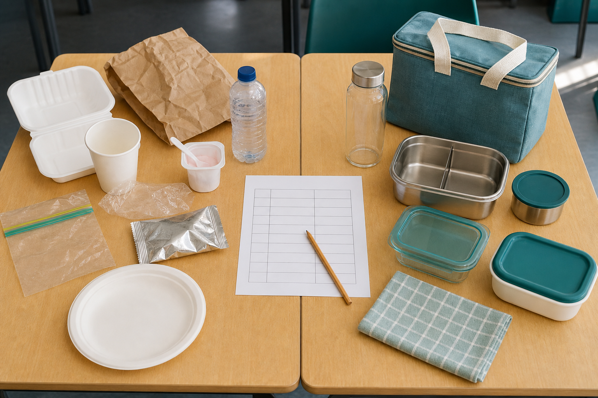
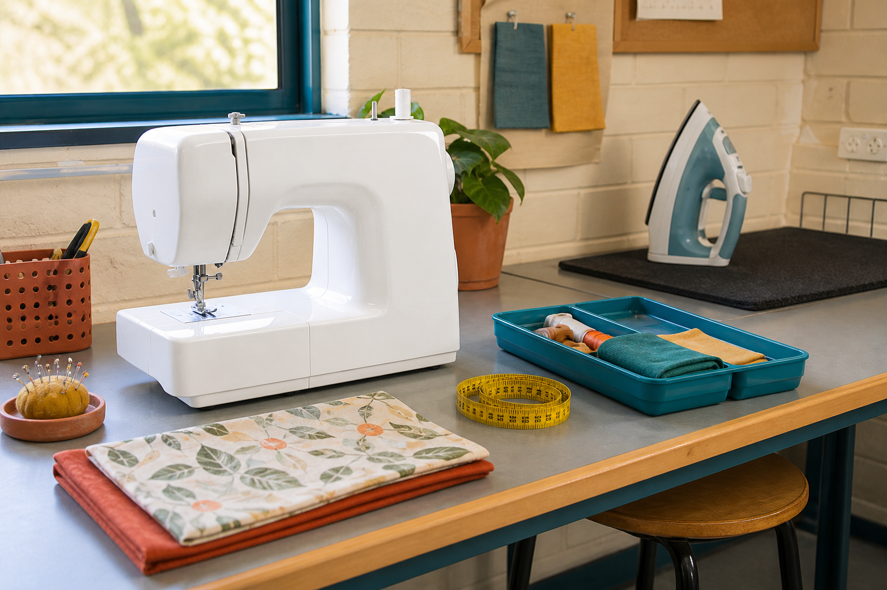
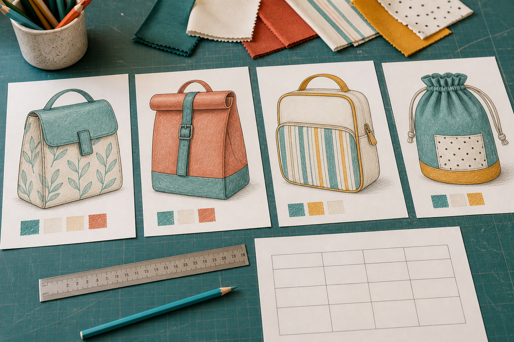
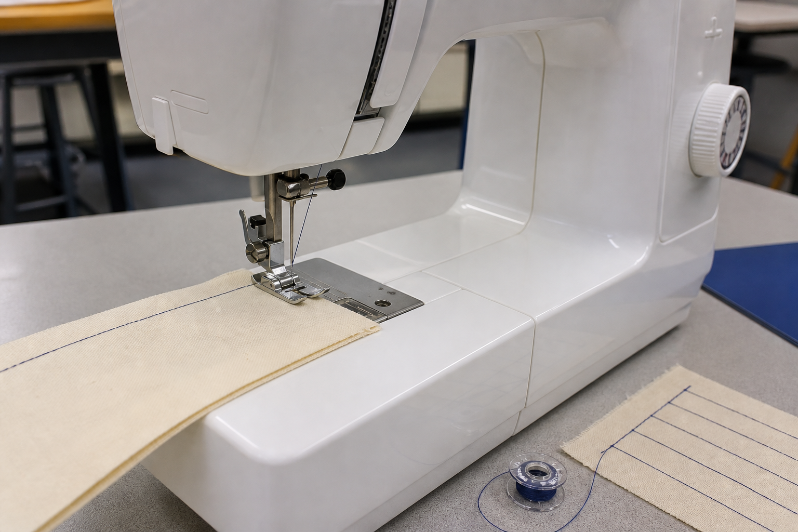
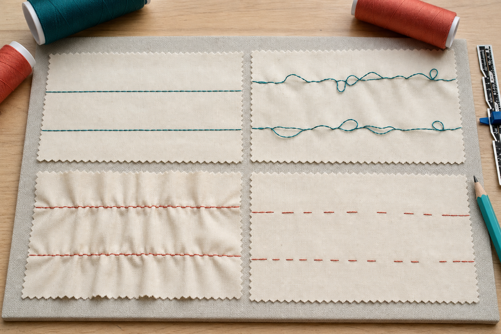
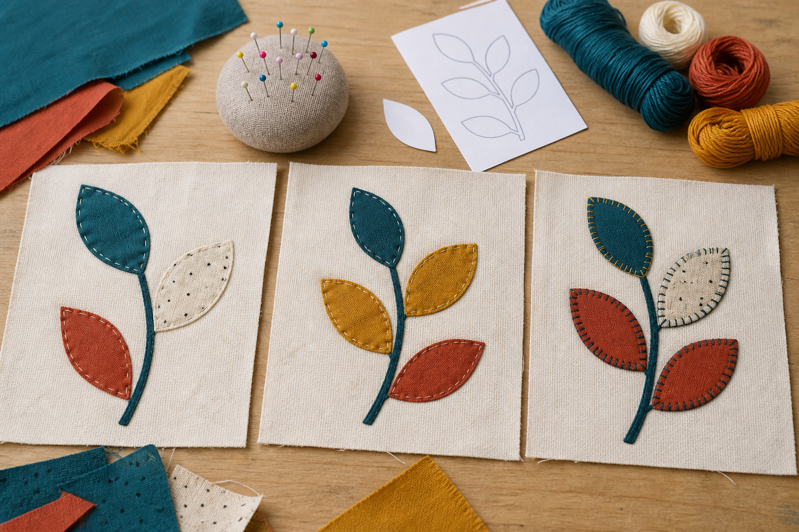
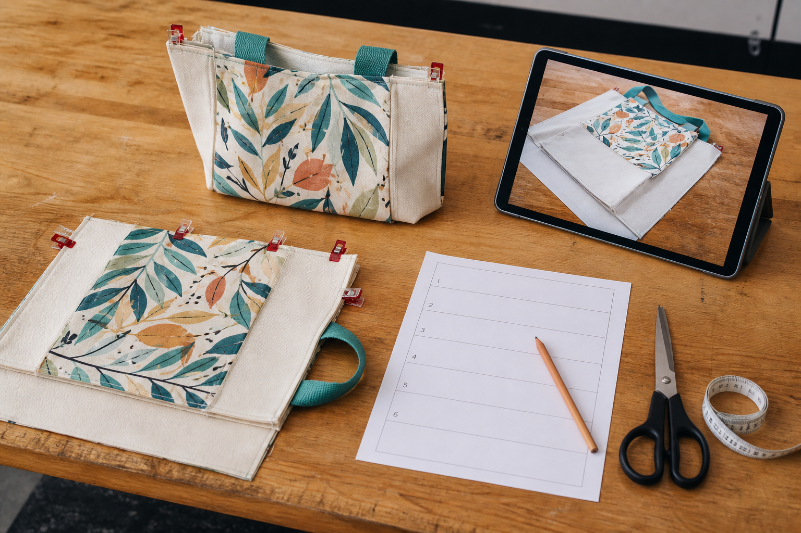
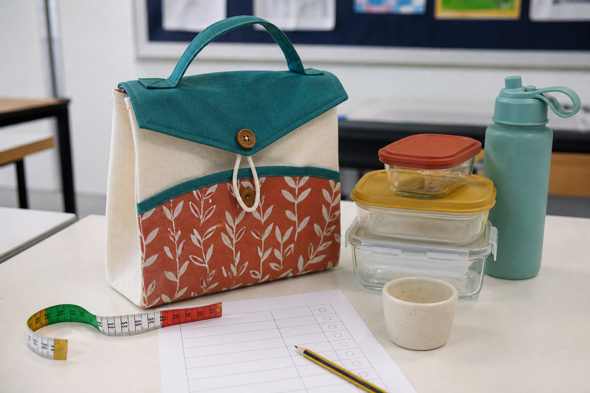

Investigate · design · make · evaluate
Project activity studios
Ten visual, answerable studios turn the authorised workbook sequence into evidence you can use in your folio. Each studio tells you what to do, what to save and where to return for theory help.
Activity progress
An activity counts as started after you save a meaningful response.
1 Design brief evidence lab
Your goal
Turn the need into testable design direction.
Separate what the product must achieve from the features that are still open to design.

- Name the packed-lunch problem without prescribing a solution.
- Describe the user before selecting features.
- List real constraints and leave unknown project facts as Teacher to confirm.
- Write criteria that name a test or observation.
2 Textile sample investigation
Your goal
Connect structure and properties to product performance.
Inspect actual samples and justify conclusions from evidence rather than colour or advertising.

Detailed comparison table — swipe sideways on a small screen.
| Sample | Observed structure | Property evidence | Lunch-bag opportunity or limitation |
|---|---|---|---|
3 Lunch-waste action investigation
Your goal
Use a real audit to plan a realistic reduction.
Count what occurs, compare alternatives and avoid unsupported environmental claims.

Audit table — swipe sideways on a small screen.
| Item found | Number in baseline | Realistic action | How the effect will be checked |
|---|---|---|---|
4 Safety scenario studio
Your goal
Recognise hazards and choose specific controls.
Apply the stop–set up–check routine to machine, sharp-tool and heat zones.

Scenario table — swipe sideways on a small screen.
| Scenario | Hazard and possible harm | Specific control and evidence |
|---|---|---|
| Loose hair is near the machine area. | ||
| A pin is missing from the cushion. | ||
| The upper thread leaves a guide while sewing. | ||
| Fabric scissors are hidden under material. | ||
| The iron zone is crowded by a power cord and fabric. |
5 Four-concept design studio
Your goal
Generate alternatives, then choose with evidence.
Change meaningful features and resist selecting the first attractive idea.

6 Sewing machine systems lab
Your goal
Explain how machine parts work together.
Move beyond naming parts by connecting thread, fabric control and operator decisions.

System table — swipe sideways on a small screen.
| Part or system | Function | What could happen if setup or use is incorrect? | Safe observation on our class machine |
|---|---|---|---|
| Upper thread path | |||
| Needle and bobbin threads | |||
| Presser foot and feed dogs | |||
| Handwheel and controls |
7 Stitch detective lab
Your goal
Diagnose visible symptoms safely and logically.
Describe what the stitch shows before changing controls or blaming tension.

Diagnostic table — swipe sideways on a small screen.
| Observed symptom | First safe checks | Action and teacher checkpoint | Result after correction |
|---|---|---|---|
8 Designer and applique sample studio
Your goal
Connect visual influence to tested surface design.
Study an authorised designer source, develop an original response and improve a sample.

Sample record — swipe sideways on a small screen.
| Question tested | Specific observation | What worked | Refinement before final production |
|---|---|---|---|
9 Production control room
Your goal
Plan, check and document authentic construction.
Use the teacher-approved instructions as authority and make quality checkpoints visible.

Quality and evidence log — swipe sideways on a small screen.
| Stage or hold point | What was checked | Problem, decision or correction | Photo filename and what it proves |
|---|---|---|---|
10 Product test and evaluation lab
Your goal
Make judgements from tests, not impressions.
Plan safe tests, record honest results and connect each improvement to evidence.

Evaluation matrix — swipe sideways on a small screen.
| Criterion | Safe test method | Evidence or result | Judgement | Specific improvement |
|---|---|---|---|---|
| Capacity and access | ||||
| Closure and carrying | ||||
| Stitching and finish | ||||
| Identity and sustainability |